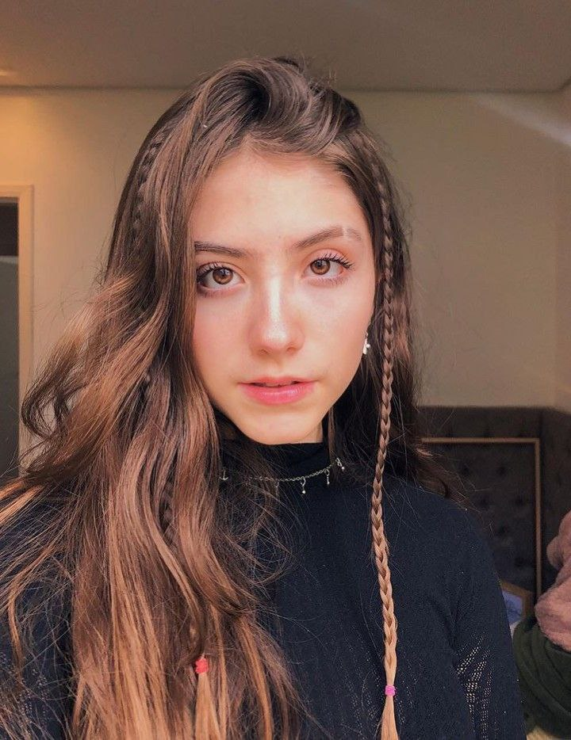
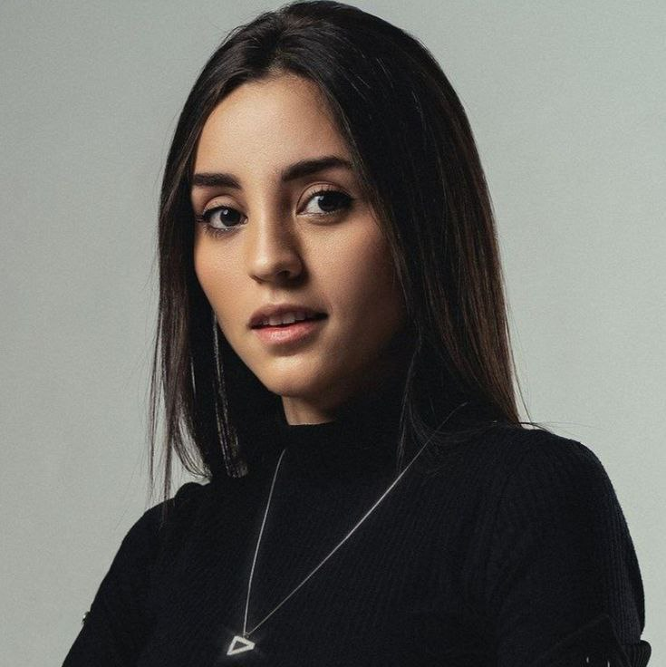
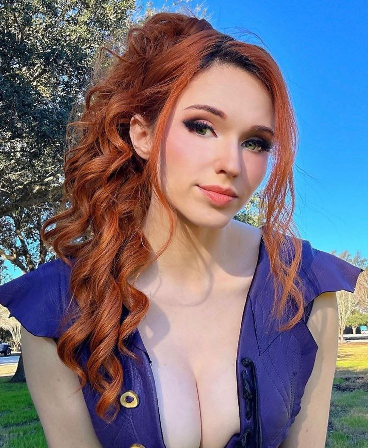

Início da Carreira
Sofia iniciou sua jornada como streamer em plataformas como Twitch e YouTube, onde começou a transmitir suas sessões de jogos e interagir com espectadores ao vivo. Sua habilidade em jogos e seu estilo de transmitir atraíram rapidamente uma base de fãs dedicada, interessada não apenas em suas habilidades no jogo, mas também na sua presença energética e envolvente.Crescimento e Popularidade
Com o tempo, Sofia ganhou popularidade por sua consistência em transmitir jogos populares e por suas transmissões ao vivo que muitas vezes incluem interações engraçadas, comentários sobre o jogo e conversas com os espectadores. Ela conseguiu cultivar uma comunidade online forte e ativa, conhecida por sua natureza acolhedora e inclusiva.Conteúdo e Diversidade
Além de jogos, Sofia também diversificou seu conteúdo para incluir streams de conversas, onde discute temas diversos com seus seguidores, além de participar de eventos de gaming e colaborações com outros criadores de conteúdo. Essa variedade em seu conteúdo ajudou a solidificar sua posição como uma das streamers mais influentes do Brasil.Impacto e Reconhecimento
Sofia Espanha não apenas alcançou sucesso como streamer, mas também é reconhecida por seu impacto positivo na comunidade de gaming brasileira. Ela frequentemente apoia causas sociais e promove mensagens de inclusão e respeito entre seus seguidores, usando sua plataforma para inspirar e motivar outros.Vida Pessoal e Futuro
Apesar de compartilhar parte de sua vida online, Sofia mantém uma abordagem equilibrada entre sua presença pública e sua vida pessoal. Ela continua a expandir suas atividades como streamer, explorando novas oportunidades para criar conteúdo envolvente e diversificado para sua audiência.Legado
Sofia Espanha continua a ser uma figura influente na cena de streaming brasileira, deixando um legado de entretenimento, engajamento comunitário e inspiração. Sua jornada como streamer exemplifica não apenas o poder do entretenimento digital, mas também a capacidade de criar conexões genuínas e impactar positivamente a vida das pessoas através da plataforma online.Principais categorias:
Valorant
Só na conversa
Início da Carreira
Bárbara Passos iniciou sua trajetória como streamer e criadora de conteúdo focada principalmente em jogos eletrônicos. Com um estilo autêntico e cativante, Babi rapidamente conquistou uma base de fãs fiel, atraindo atenção pela sua habilidade nos jogos e pela interação próxima com sua audiência.Ascensão com a LOUD
Babi se destacou ainda mais ao se juntar à organização LOUD, onde sua presença ajudou a aumentar a visibilidade e o alcance da marca. A LOUD é conhecida por promover uma variedade de jogos e conteúdos relacionados a eSports, tornando-se um ambiente ideal para Babi expandir sua influência e conectar-se com uma audiência ainda maior.Popularidade e Engajamento
Com seu carisma e talento em frente às câmeras, Bárbara Passos consolidou sua reputação como uma das principais streamers da LOUD. Suas transmissões ao vivo não apenas mostram suas habilidades em jogos, mas também criam um espaço interativo onde seus seguidores podem participar, aprender e se entreter.Conteúdo Diversificado
Além das transmissões de gameplay, Babi diversifica seu conteúdo com vlogs, desafios, e interações especiais com outros membros da LOUD e influenciadores parceiros. Essa diversidade ajuda a manter seu público engajado e interessado em suas atividades diárias dentro e fora do mundo dos games.Impacto na Comunidade
Bárbara Passos também é reconhecida por seu impacto positivo na comunidade de gamers, promovendo valores como inclusão, respeito e diversidade. Ela utiliza sua plataforma para apoiar causas sociais importantes e inspirar seus seguidores a participarem de iniciativas positivas.Legado e Futuro
Com um futuro promissor à frente, Loud Babi continua a influenciar e inspirar uma nova geração de gamers e criadores de conteúdo no Brasil. Seu legado não se resume apenas aos feitos no mundo virtual, mas também à sua capacidade de conectar pessoas e fazer diferença na comunidade de gaming. Bárbara Passos, conhecida como Loud Babi, é uma figura emblemática na LOUD e na cena de streaming brasileira, deixando uma marca duradoura como uma das principais streamers do país.Principais categorias:
Valorant
Só na conversa
Início da Carreira
Amouranth iniciou sua carreira como cosplayer, criando trajes inspirados em personagens de videogames, anime e cultura pop. Sua habilidade em recriar personagens com detalhes impressionantes rapidamente ganhou admiradores, ajudando-a a se destacar em convenções e eventos de cosplay.Ascensão na Twitch
Amouranth expandiu sua presença online para incluir transmissões ao vivo na Twitch, onde inicialmente focou em conteúdos relacionados a cosplay e discussões sobre cultura pop. Com o tempo, ela diversificou seu conteúdo para incluir jogos, bate-papos interativos e até mesmo sessões de treino físico, atraindo uma base de fãs diversificada.Conteúdo e Popularidade
O estilo de Amouranth é caracterizado por sua personalidade extrovertida e seu compromisso em interagir de forma próxima com sua audiência. Ela é conhecida por criar um ambiente acolhedor e divertido durante suas transmissões, o que contribuiu significativamente para sua popularidade crescente na Twitch.Controvérsias e Resiliência
Ao longo de sua carreira, Amouranth também enfrentou algumas controvérsias relacionadas a suas transmissões e conteúdos, o que gerou debates sobre o papel das streamers femininas na comunidade gaming. Apesar dos desafios, ela demonstrou resiliência ao continuar focada em seu trabalho e na interação positiva com seus seguidores.Impacto e Legado
Amouranth deixou um impacto significativo na comunidade de streaming e cosplay, inspirando uma nova geração de criadores de conteúdo a explorar suas paixões e interesses. Sua habilidade em combinar habilmente cosplay, gaming e interações ao vivo estabeleceu um padrão para outros influenciadores digitais.Futuro
Com um futuro promissor à frente, Amouranth continua a expandir sua presença online, explorando novas oportunidades de conteúdo e colaborações. Sua capacidade de se adaptar e evoluir dentro do ambiente digital garante que ela permaneça como uma figura influente e respeitada na indústria do entretenimento online. Kaitlyn Siragusa, conhecida como Amouranth, é uma figura icônica e multifacetada que continua a deixar sua marca no mundo do streaming, cosplay e cultura pop, inspirando milhões de seguidores ao redor do mundo.Principais categorias:
Praia, piscina ou jacuzzi
ASMR
Cosplay
